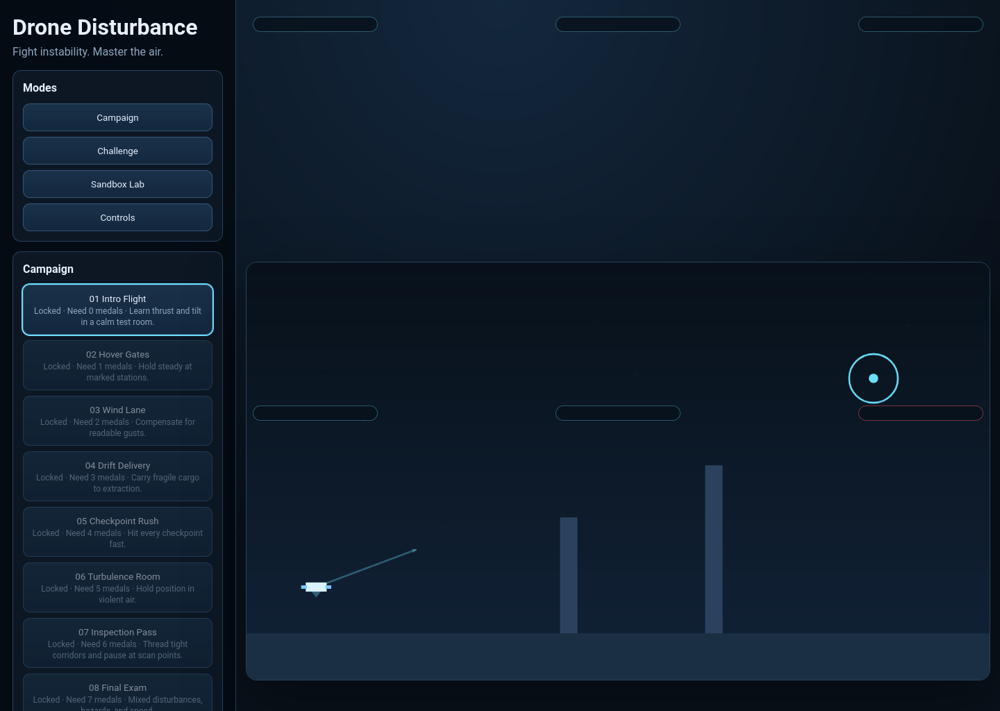

Core Flight Model
Responsive drone movement with thrust, tilt, momentum, gravity, drag, and battery behavior.
Drone Disturbance is a browser-based 2D drone flying game focused on unstable flight, environmental hazards, and control mastery.

Responsive drone movement with thrust, tilt, momentum, gravity, drag, and battery behavior.
Dynamic wind, turbulence, and payload imbalance create changing flight conditions.
Collisions, danger zones, no-fly areas, and payload damage produce readable mission failures.
Reach targets, hold positions, pass checkpoints, inspect points, and deliver payloads.
Structured level unlocks, medal goals, and persistent progress support long-term play.
Recommended presets plus stability and agility sliders make the game accessible and customizable.
Live objective, timer, score, status, warning, battery, and optional telemetry displays.
Keyboard and gamepad support with configurable action bindings for fast retries.
Intro levels and plain-language prompts teach movement, hovering, and disturbance response.
Replayable score-focused challenges and a free-fly lab for testing tuning and disturbances.
Multiple handcrafted levels across lab, rooftop, canyon, factory, and storm themes.
Motor and wind cues, warnings, and readable effects improve clarity during high-pressure flying.